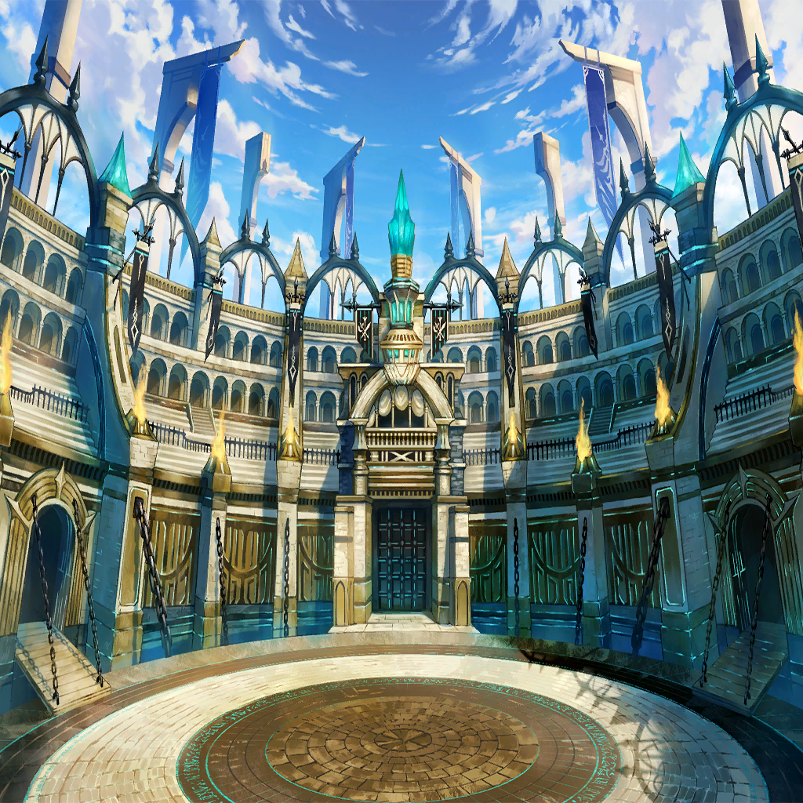

Sol
Sol

Sol
Sol

Sol
Sol

Sol
Sol

Kudanstein
Kudanstein

Sol
Sol


Bianca
Bianca
Bianca
Bianca
Bianca
Bianca
Bianca
Bianca
Bianca
Bianca
Bianca
Bianca
Bianca
Bianca
Bianca
Bianca
Bianca

Bianca
Bianca
| |
| |
| I don't want the memories we made to be for naught. | |
| We lost and we were painted as the villains. That makes me the angriest of all. | |
| Even though your fate tears my heart apart... Even though I'd like to end it all and throw it all away... | |
| I will shine on until the morning comes again. | |
| Excerpts from The Babel Continental Times: | |
| "An End to the Lion Monarch's Charge" | |
| "The Holy Guard managed to uphold their absolute justice across the land through might, effort, and sacrifice. It is with great joy that we report their astounding victory to the entire continent." | |
| "Tragedy." "Mourning." "Bitter Tears." "Hope for a better future." | |
| "A resounding loss for Greed Dike." "Circumstances surrounding Emperor Orion's death uncertain." | |
| "The Loss of the 11th Lord Commander." | |
| An excerpt from Lucas Langum's "The Glorious Holy Guard," regarding the Lord Commander: | |
| "Surrounded by those who share his ideals, he gazed up at the sky, hoping for something better than the world they had inherited. May the heavens look kindly upon they who embrace true justice, even as they burn bright and turn to ash." | |
Sol |
The heavens don't look kindly on us. |
Sol |
For us there are no prophets or saviors. No gods to pray to. |
| |
Sol |
No family, no peace or quiet. Just the fight to stay alive. To kill to survive. |
Sol |
What place is there for virtue when stealing is the only way to survive? What need is there for honesty? |
| |
Sol |
Our binding commandments are our only asset. |
Sol |
All we have is our resolve to keep on living. |
| |
Sol |
I am the sun that was born in the sunken city without light! |
Sol |
I cannot lose! My destiny is to win! |
Kudanstein |
You are holding your life together with nothing more than sheer force of will. |
| |
Kudanstein |
What drives you to do so? |
| |
| Holy Guard Knight | We found two corpses. |
| Holy Guard Knight | A man and a woman. The wounds they received in that final blast made them difficult to identify. |
| Holy Guard Knight | However, we've determined that the bodies must belong to Sol, the leader of the Templars, and his associate and fellow Templar, Acht. |
| Holy Guard Knight | Dispose of them. |
| |
Sol |
If there is no one left to speak of the Templars... |
Sol |
Wouldn't that mean we no longer exist? |
| |
| ??? | *Slrpp* *Slurp* |
| ??? | *Gulp* |
| ??? | Mmgf...hnmm... |
| ??? | *Gulp* |
Bianca |
Was it enough? |
| ??? | ... |
Bianca |
Your meal, I mean. |
| ??? | Yes. |
Bianca |
Don't get any on your dress, okay? |
Bianca |
Amu. |
| Amu | Yes? |
Bianca |
You should be more discerning. I can't believe you will even drink blood from corpses. |
| Amu | Yes. |
Bianca |
Do you really like blood that much? |
| Amu | No. |
Bianca |
Haha. I see. |
Bianca |
I'm guessing you must be really hungry then, huh? |
| Amu | ... |
Bianca |
It's fine. Drink up. |
| Amu | *Sip* |
Bianca |
That's it. |
| Amu | *Slurrrp* |
Bianca |
There you go. You're such a good girl. |
| Amu | No. |
Bianca |
This is the world's garbage can. |
Bianca |
A place for rebellious slaves to be thrown away. |
| Amu | ... |
Bianca |
We're all just born to be devoured. |
Bianca |
And if we're not tasty enough, we're cast aside like trash. |
| Amu | ... |
Bianca |
But who wants to be devoured? I certainly don't. So maybe it's better to taste bad, after all. |
Bianca |
I want to live, without being devoured or discarded. How about you, Amu? |
|  | |
| Amu's Owner | There's no need to consider them human. They're more like livestock, if anything. |
| Mayor of Eos | Hmph. She's awfully popular for a lowly slave. I suppose no one can resist a pretty face... |
| |
| Amu's Owner | You know it. Beauties always do well in the arena. |
| Amu's Owner | Regardless of the outcome, the audience gets something nice to look at, yes? In fact, it makes for a better spectacle when they lose. |
| Mayor of Eos | I suppose there are plenty of war orphans to go around, to make up for the ones you lose in battle. |
| Amu's Owner | Indeed. So what do you say, Mayor? I only deal in the best and most obedient slaves. Guards, maids, assistants; I can provide whatever you need. |
| Mayor of Eos | We'll see about that. I have yet to see your work in action. |
| Amu's Owner | Heheheh... Then please do enjoy the show. |
| Announcement | Ladies and gentlemen! It's what you've all been waiting for! |
| Announcement | What will happen when man and beast clash? It's the pure of heart versus the wild and wicked! Will we see innocence prevail over the evils of this world?! |
| Announcement | Either way, I, for one, can't wait to see that pristine white dress dyed red with guts and glory! |
| Announcement | She's beautiful, inside and out! She's everyone's favorite girl of pure heart! The gladiator who's slashed her way into our hearts! |
| Announcement | She's got no will of her own! She's the artificial maiden! The beast of war! That's right, give it up for...AMU!!! |
| Spectator | Amu! Amu! Amu! Amu! |
| Mayor of Eos | "Artificial" maiden? |
| Amu's Owner | I created her to be the perfect servant, who lives only to serve other humans. As such, she possesses no will of her own. |
| Mayor of Eos | You're into that sort of thing? |
| Amu's Owner | Oh, no, it's nothing like that. It's simple business savvy. As I always say, my business provides "a blank slate for everyone." That way, my products can be adjusted to suit the needs of any prospective buyer. |
| Spectator | Amu! Amu! Amu! Amu! |
| Mayor of Eos | You've certainly got an eye for showmanship. She might just be the opening act, but you've got the crowd on the edge of their seats. |
| Amu's Owner | She's a clever girl. She could even be trained to be an excellent assistant. |
Bianca |
Don't get hurt, okay? |
| Amu | Yes. |
| Mayor of Eos | I can see that, but hasn't she had too easy a time of it? I've heard she's yet to be defeated. |
| Amu's Owner | Haha! You're not the first to say something like that. I'm sure the audience is growing bored of all these easy victories as well. That's why I decided to mix things up a little this time around. |
| Announcement | Is today the day that the artificial maiden's winning streak finally comes to an end? Hold on to your seats, ladies and gentlemen, because it's time to introduce today's opponent! |
| Amu | Huh? |
Bianca |
What's this?! |
| Announcement | THE GREAT EXPERIMENTAL BEAST! Brr... This guy gives me the chills! |
| Announcement | This monster among monsters is feeling cranky, and not at all in the mood to be slain by human hands today! |
| |
| Amu's Owner | This sort of beast is normally reserved as a punishment for dangerous criminals and outlaws. I had to pull some strings to get my hands on one, but I couldn't be happier with the purchase. |
| Amu's Owner | Its enhanced physique and improved reflexes were all achieved through medical experimentation. I set out to create the ultimate weapon, and this is what I ended up with. |
| Amu's Owner | However, like Amu, it has seen a few too many victories. |
| Mayor of Eos | The loser will die, and the winner will be wounded enough to make them easy to take care of later... Now that's an efficient way to control your livestock. |
| Amu's Owner | You know, I've managed to really cut costs on Amu's meals lately. I told her that if she was hungry, she should just drink the blood of corpses—and by the gods she actually did it! Isn't that hilarious? |
| Announcement | It's time for the first match! ARE YOU READY? |
| Amu's Owner | She will be fighting five consecutive matches without a break today. There's no doubt about it: her winning steak shall be punctuated with her own death! |
| Announcement | FIGHT! |
| Amu's Owner | At last! Here it is! A good old Colosseum bloodbath! |
| Amu's Owner | No... Impossible! |
| Announcement | And Amu wins her fourth match of the day! All that remains is the final battle! Will she remain undefeated, or will she fall here?! |
| Mayor of Eos | What a bore. She's making this look easy. |
| Amu's Owner | K-kill her already! Unleash all the beasts at once if you must! Just make sure that Amu dies! |
| Announcement | Well, folks, the Colosseum's master is in high spirits today! Looks like we're in for a real show! |
| Spectator | Ooh! |
| Announcement | All right! The fifth and final battle is upon us at last! Here we go! |
| Amu | ... |
| Announcement | ARE YOU READY? |
| Amu | ... |
| Amu | Thanks for the meal. |
| Announcement | GO! |